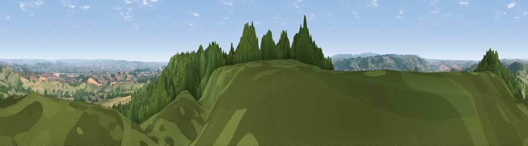

Viewpoint near Higher Ashton
#1660 in England · top 2% of its area beats it · near Higher Ashton · open accessWhere it is
The exact computed spot (SX 87725 85788). Click the marker for map links.
Public access: this spot lies on mapped open-access land (CRoW Act 2000) — you may roam here on foot. Computed from Natural England's CRoW access layer and OpenStreetMap rights of way — not the legal definitive map. Always verify locally.
The view, rendered

A 360° render of this exact spot computed from the terrain model, tree cover and land cover — summer colours, afternoon light, calibrated against photographs of famous viewpoints. Real trees, hedges and buildings will differ in detail.
The panorama
Grey silhouette: terrain skyline in each direction (720 bearings, Earth curvature and refraction included). Dashed green: skyline with trees (+15 m) and buildings (+8 m) as obstacles. Blue strip: how far the ground is visible on each bearing.
Where the view opens
Wedge length = distance to the farthest visible ground on that bearing (vegetation-aware). Rings at 10, 25 and 50 km.
What fills the view
50% woodland · 41% grassland · 7% cropland ·
Angular shares of the visible panorama (visual magnitude), not map area. Landscape diversity 0.42 (0–1 Shannon).
Key numbers
More beautiful places nearby
The staircase of upgrades: each row has a higher view potential than everything closer. Driving times are estimates from straight-line distance, calibrated against real road routing — check an actual route before setting out.
| Place | Direction | Drive | Score |
|---|---|---|---|
| Viewpoint near Doddiscombsleigh | NNW · 0 km | ~2 min | 78.4 |
| Viewpoint near Kenn | ESE · 4 km | ~9 min | 80.0 |
| Viewpoint near Kenton | SE · 7 km | ~14 min | 80.7 |
| Viewpoint near Kenton | SE · 7 km | ~14 min | 82.9 |
| Viewpoint near Holcombe | SSE · 12 km | ~23 min | 83.3 |
| Viewpoint near Shaldon | SSE · 16 km | ~28 min | 83.8 |
| Viewpoint near Stokeinteignhead | SSE · 17 km | ~29 min | 84.1 |
| High Peak | E · 23 km | ~37 min | 85.3 |
50.66090, -3.58986 · source: screening · position refined by local search. Computed location — check access rights before visiting.